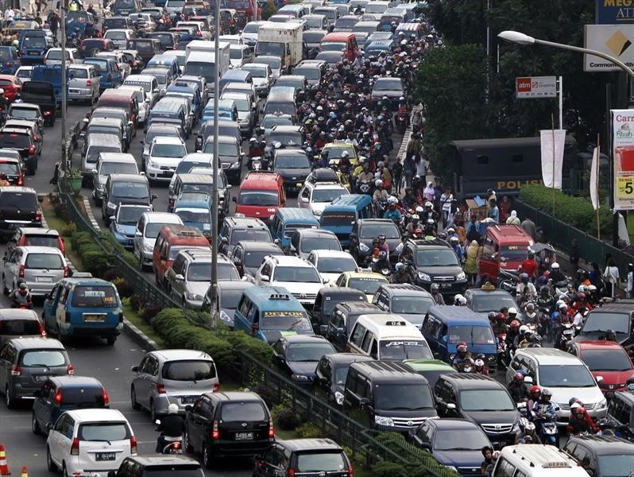

El tráfico se ocasiona por el embotellamiento de los coches. Esto es ocasionado por accidentes,
personas que frenan inesperadamente, etc. Gracias a lo distraídos y a lo pobre que el ser humano reacciona,
poco a poco se crean tráficos de horas sin que haya habido un accidente o algo grave.
Mi propuesta para solucionar este problema seria el invento de una inteligencia artificial en forma de web
que se pueda comunicar entre sí. Es decir, si hay un freno brusco, la maquina lo detecta y frena ocasionando
una reacción en cadena a todos los carros cerca. Después, al mismo tiempo todos los autos aceleran
al mismo tiempo y misma velocidad, así despejando el tráfico en cuestión de segundos.

imagen de el caos que puede llegar a formarse por el trafico
Compañías
En esta lista me gustaría compartirles un ranking de las compañías automotoras
que yo imagino serian las mejores opciones para ponerles esta inteligencia artificial.
Lo que consideré para crear esta lista fue la tecnología de los autos de la compañía,
el dinero y el alcance alrededor del mundo.
Porsche
BMW
Auidi
Mercedes-Benz
Toyota
Nissan
Ford
Tesla
Volkswagen
KIA
Video de Como Acabar con el Trafico
En este video explicamos como se forma el trafico en las calles y como poder evitarlo.
Podemos ver como el trafico es causado por la mala reaccion de los conductor.
Las distracciones al conducir pueden ser bastantes y debe cambiar.
¿Qué es el Trafico?
En español, suele utilizarse tránsito para explicar flujo de recursos con movilidad
(pasar de un espacio a otro por una vía) y tráfico a los recursos transportados por otro medio
(también tiene relación con negociar, comerciar con el dinero y las mercancías o a hacer negocios no lícitos).
El término tránsito, perteneciente etimológicamente del latín “transitus” alude a la acción de
circular , de pasar de un lugar hacia otro, así sea caminando o conduciendo cualquier transporte, por
calles u otros senderos, aunque además puede referirse a la circulación que se genera en el interior
de las casas para moverse de un cuarto a otro.
La Dirección de Tránsito y Movilidad, es la delegada de supervisar el respeto a las reglas jurídicas
que regulan el tránsito y vialidad, así como planificar, ordenar, coordinar, guiar y supervisar las
ocupaciones que en temas de tránsito, control vehicular y vialidad se establezcan y desarrollen en
el municipio.
Ciudades con Más Trafico
Moscú, Rusia, es la ciudad con mas trafico en el mundo. Anualmente, las personas pasan congestionadas en el
trafico durante 210 horas. Aproximadamente, en moscu a hora pico, llegan a una velocidad maxima de 7 km por hora.
Despues de Moscú, la ciudad con mas trafico en el mundo, sigue Estambul, Turquia. Siendo esta la segunda ciudad
con mas trafico, los ciudadanos tienden a estar atascados en el trafico por aproximadamente 180 horas anualmente. Su velocidad
al estar en el trafico, no alcanza ni a llegar a los 10 km por hora.
Para terminar con las primeras tres ciudades con mas trafico en el mundo, sigue Bogota, Colombia. Siendo esta una
de las cuatro ciudades de sudamerica en el top 10 de las ciudades mas transitadas. En esta ciudad los ciudadanos llegan a pasar hasta
270 horas en el trafico. Siendo esta la ciudad donde las personas pasan mas tiempo en el trafico, pero en su totalidad, no hay trafico en
toda la ciudad.
Ideas Para Acabar con el Trafico
Existen muchas maneras de acabar con el trafico. Mi idea es crear un sistema automatico donde todos los coches se comuniquen entre si
para que no hayan movimientos bruscos. El trafico se crea gracias a frenones bruscos, distracciones del conductor, entre otros. Como el ser
humano no tiene la habilidad de reaccionar rapido, se necesita algo que sea mas veloz.
La reaccion al manejar es de lo mas importante, debes de ser capaz de reaccionar en cuestion de segundos. Pero el ser humano es un ser
que se distrae, por esto se hacen los atascones, gracias a fenones muy bruscos o choques. Si quitas el factor de que el ser humano se
distrae, necesitamos algo que maneje y reaccione en cuestion de segundos o incluso sepa que va pasar.
Este sistema, se integrara a cada coche del mundo, teniendo autos inteligentes que se manejan solos. No solo pueden raccionar ante todo
en cuestion de segundos, pero incluso sabe lo que va pasar. Como esta en comunicacion con cada auto en la zona, sabe si adelante hay un frenon,
sabe si el auto de enfrente se va mover a la derecha o izquierda. Una perfecta red de comunicacion que haga el flujo de los autos mucho mas faciles.
Páginas Relacionadas
Si gustan más información sobre el tema, les dejo enlaces a páginas de grande prestigio.
Aquí debajo encontraran enlaces de paginas que yo utilice para crear este documento
al igual que paginas que te ayudaran mucho por si quieres empaparte un poco mas acerca del tema.